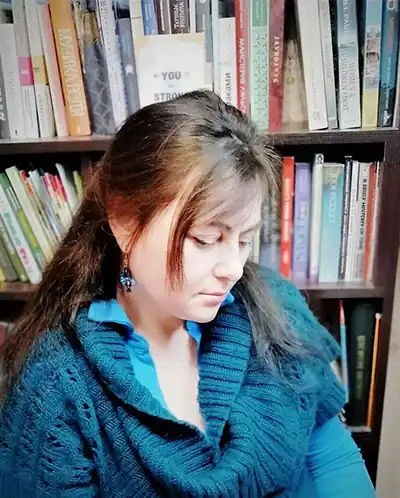

Добжанська-Найт Наталія Іванівна народилась у 1972 р. у м. Луцьку.
В 1995 р. закінчила навчання на факультеті романо-германської філології ВНУ імені Лесі Українки.
1995-2020 – викладачка ВНУ ім.Лесі Українки. Кандидатка філологічних наук (спеціальність: "Германські мови"), доцентка. Членкиня Спілки християнських письменників України. Авторка книги малої прози "Хроніки пустелі" (Харків, "Фоліо", 2007 р. ("Гранослов")). Друкувалася в часописах "Нова проза", "Позапростір", "Золота пектораль", на літературно-мистецькому порталі "Захід-Схід", в альманасі "Осоння", та ін. Англомовна збірка творів малої прози в авторському перекладі опублікована в електронній версії на сайті "Amazon". Перекладачка з англійської на українську та на англійську. Перекладацькі та наукові публікації. Зокрема, переклад книги Гелен Келлер "Світ, у якому я живу" ("Всесвіт", аудіокнига та шрифтом Брайля). У вільний час, окрім письменницької діяльності, займається розмаїтими художньо-творчими проєктами. Має канал у Youtube під назвою: " Авторські казки, притчі, оповідання. "